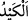

zannetmiyorum.” dedi. Bunu duyan öbür kardeşleri: “Onun yüküne de bakmadıkça
peşini bırakmayız. Böylesi hem sizin hem de bizim gönlümüzün ferahlaması bakımından
gâyet yerinde olacaktır.” dediler.
Kardeşlerin bu teklifi üzerine Bünyamin’in yükünü açıp araştırınca kralın tasını
oradan çıkardılar. “Sonra da onu kardeşinin yükünden çıkarttı” sözünün manâsı budur.
Tas, Bünyamin’in yükü arasında gizlenmiş vaziyette bulunup da oradan çıkarılınca,
sesleri solukları kesilerek başlarını eğdiler. Tasla birlikte Bünyamin’i Yûsuf’a teslim
ettiler. Bir yandan da İbranîce çirkin sözler sarf ederek:
“Hırsız herif, sana kim kralın tasını çal dedi?! Rahil’in diğer oğlu (Yûsuf) yüzünden
başımıza gelenler şimdi senin yüzünden de gelecek!” diye bağırdılar.
Bünyamin: “Aksine Rahil’in iki oğlu hiç kimseden çekmediğini sizden çekti. Yûsuf’a
yapacağınızı yaptınız! Şimdi de kalkıp beni hırsızlıkla itham ediyorsunuz!” diye cevap
verdi.
“Peki öyleyse tası senin yükünün arasına kim koydu? Tas senin yükünden çıkmadı
mı?” dediler.
Bünyamin: “İlk gelişinizde (iâde edilen) sermayelerinizi siz çaldıysanız, yüklerinizin
arasına sizler koyduysanız, tamam tası çalıp yükümün arasına koyan da benim!” dedi.
Rubil: “Gerçekten doğru söylüyor.” dedi.
Bünyamin, Yûsuf’un sırrını açıklamayı düşündüyse de kendisine yaptığı tavsiyeyi
hatırlayarak bundan vazgeçti.
“İşte biz Yûsuf ’a böyle bir tedbir” böylesine ilginç bir çare “öğrettik” yâni
maksadını elde etsin diye tas gizleme ve daha sonraki tertipleri yaptık’ demektir. Bu
çare de kardeşlerini böyle fetva vermeye iterek -fetva isteyen adamları vasıtasıyla
beklemedikleri şekilde- bizzat kendi ağızlarından almış olmasıdır.
“
” esasen hîle, aldatmak ve tuzak demektir. Başkasını içinde gizlediğinin tersi
vâki imiş vehmine düşürmendir.
“Yoksa kralın kanuna göre” Yûsuf “kardeşini alıkoyamayacaktı.”
Bu ifade, mezkûr çarenin ve yapılmasının illetini açıklamaktadır. Sanki: “Yûsuf bu
hîleye niçin başvurdu?” diye sorulmuş ve şöyle cevap verilmiştir: Çünkü Kral’ın
hırsızlarla ilgili kanunlarına göre davrandığı takdirde böyle bir suç işleyen kardeşini
alıkoyması mümkün olmayacaktı. Yani Mısır kralının hüküm ve kazasına göre kardeşini
ancak böyle bir çare ile alıkoyabilirdi. Çünkü kralın kanunlarına göre hırsızın cezası,
dayak ve çaldığı şeyin iki katını ödemekti. Yâkub (a.s.)’ın şerîatında olduğu gibi köle
yapmak değildi.
“Ancak Allah’ın dilemesi hariç.” Yâni ancak Allah’ın bunu dilemesi durumu dışında,
demektir. Allah’ın dilemesi ise bu çareyi irâde etmesinden ibârettir. Ya da bu şekilde
onu alıkoymayı dilemesi durumu hâriç, demektir.
el-Kevâşî’de der ki: Babasının şerîatı olmasaydı kardeşini yanında alıkoyamayacaktı.
Bahru’l-ulûm’da şöyle der: “Böyle bir hîlenin hükmü, başvurulduğu takdirde birtakım
dînî menfaat ve maslahatlar elde edilen şer’î hîlelerin hükmü gibidir. Meselâ Cenab-ı